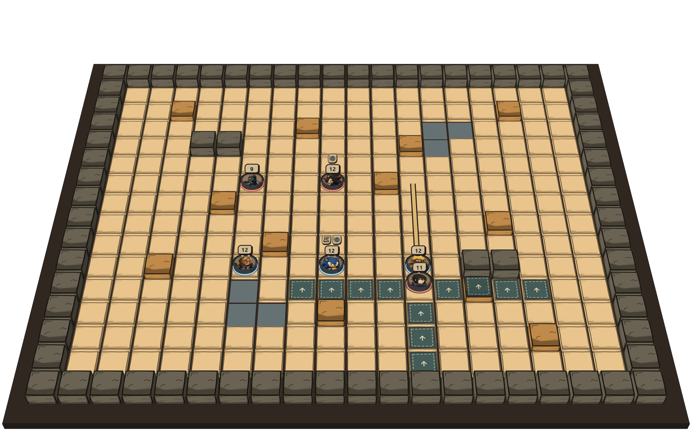

<!doctype html>
<html lang="zh-CN"><meta charset="utf-8"><title>Red VS Blue · 棋盘上的技能演出</title>
<style>
@font-face{font-family:GameHand;src:url('../../data/pages/images/tabletop/ZCOOLKuaiLe-Regular.ttf')}
*{box-sizing:border-box}body{margin:0;background:#28241f;color:#28241f;font-family:GameHand,sans-serif}
.poster{width:1600px;height:900px;position:relative;overflow:hidden;background:#cab18a;isolation:isolate}
.board{position:absolute;width:2700px;max-width:none;left:-650px;top:-460px}
.heading{position:absolute;z-index:4;left:35px;top:24px;transform:rotate(-3deg);background:#dfc99d;border:5px solid #28241f;padding:12px 22px 15px;box-shadow:6px 7px #28241f;border-radius:4px 13px 5px 9px}
h1{font-size:65px;line-height:1;margin:0;font-weight:400;letter-spacing:-2px}.red{color:#a4493f}.blue{color:#416978}.vs{font-size:39px}
.heading p{margin:8px 0 0;font-size:25px;letter-spacing:4px}
.caption{position:absolute;z-index:4;left:40px;bottom:76px;padding:14px 22px;background:#28241f;color:#ead5af;transform:rotate(-3deg);border:3px solid #ead5af;box-shadow:5px 6px #28241f}
.caption strong{font-size:37px;font-weight:400}.caption p{margin:8px 0 0;font-size:24px}
.footer{position:absolute;bottom:0;left:0;right:0;height:44px;background:#28241f;color:#dfcba5;z-index:8;display:flex;align-items:center;justify-content:space-between;padding:0 32px;font-size:21px}.footer small{font:15px sans-serif}
.ink{position:absolute;inset:0;width:1600px;height:900px;z-index:2;pointer-events:none}
.skill-note{position:absolute;right:36px;top:31px;z-index:5;font-size:27px;transform:rotate(3deg);padding:10px 17px;background:#dfc99d;border:4px solid #28241f;border-radius:2px 9px 3px 8px}
.panel{position:absolute;top:0;height:856px;overflow:hidden}.before{left:0;width:710px;clip-path:polygon(0 0,100% 0,90% 100%,0 100%)}.after{left:650px;right:0;clip-path:polygon(7% 0,100% 0,100% 100%,0 100%)}
.before .board{width:2800px;left:-1320px;top:-440px}.after .board{width:2850px;left:-1330px;top:-490px}
#feature .heading h1{font-size:44px;letter-spacing:1px}#feature .heading p{font-size:22px;letter-spacing:1px}#feature .caption{left:65px;bottom:85px}
.panel-label{position:absolute;z-index:4;left:935px;bottom:90px;font-size:32px;background:#dfc99d;border:4px solid #28241f;padding:10px 19px;transform:rotate(3deg)}
</style>
<section class="poster" id="hero">

<svg class="ink" viewBox="0 0 1600 900" aria-hidden="true"><g fill="none" stroke="#292620" stroke-width="7" stroke-linecap="round"><path d="M896 372 L917 470 M849 408 L883 481 M1150 395 L1108 459 M1215 463 L1148 499 M1223 663 L1142 635 M1098 761 L1068 692 M872 716 L919 670 M768 560 L866 568"/><path stroke-width="3" d="M922 347 L938 433 M1181 396 L1145 450 M1261 641 L1184 622 M867 751 L902 706 M770 591 L846 589"/></g></svg>
<div class="heading"><h1><span class="red">RED</span> <span class="vs">vs</span> <span class="blue">BLUE</span></h1><p>红蓝大作战 · 回合制战棋</p></div>
<div class="skill-note">宇智波佐助 / 千鸟</div>
<div class="caption"><strong>一招，穿过战线。</strong><p>角色技能 × 位移 × 漫画战斗演出</p></div>
<div class="footer"><span>八枚棋子，把你的阵容打出来。</span><small>真实训练技能帧 · 飘字放大与速度线加工</small></div>
</section>
<section class="poster" id="feature">
<div class="panel before"></div>
<div class="panel after"></div>
<svg class="ink" viewBox="0 0 1600 900" aria-hidden="true"><path d="M719 -10 L647 856" fill="none" stroke="#28241f" stroke-width="14"/><g fill="none" stroke="#28241f" stroke-width="7" stroke-linecap="round"><path d="M1052 342 L1077 415 M997 379 L1044 441 M1373 450 L1307 482 M1429 559 L1337 563 M1328 728 L1295 669 M994 696 L1048 656 M299 251 L309 335 M358 223 L362 330"/></g></svg>
<div class="heading"><h1>技能，直接打在棋盘上。</h1><p>千鸟 · 同一次实际释放的两个瞬间</p></div>
<div class="caption"><strong>01 / 突进</strong><p>穿过目标，改变站位。</p></div>
<div class="panel-label">02 / 命中 · 伤害与控制</div>
<div class="footer"><span><span class="red">RED</span> vs <span class="blue">BLUE</span> / 红蓝大作战</span><small>实机分镜拼贴 · 原生轨迹与伤害字 · 装饰速度线</small></div>
</section></html>
